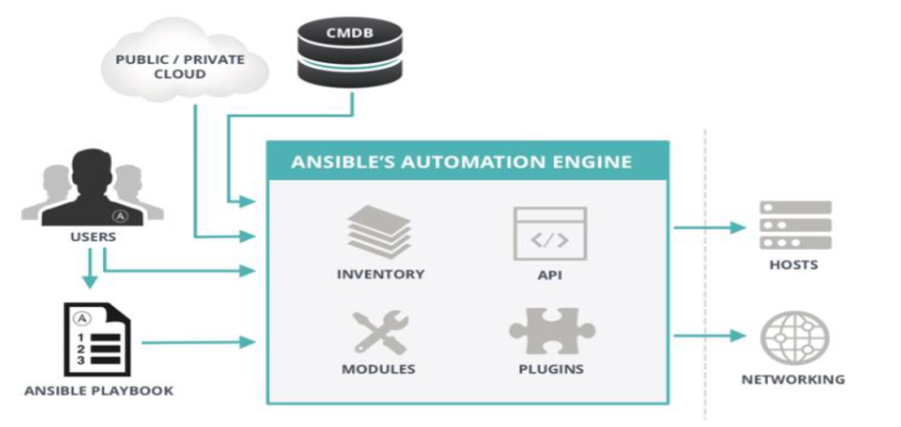
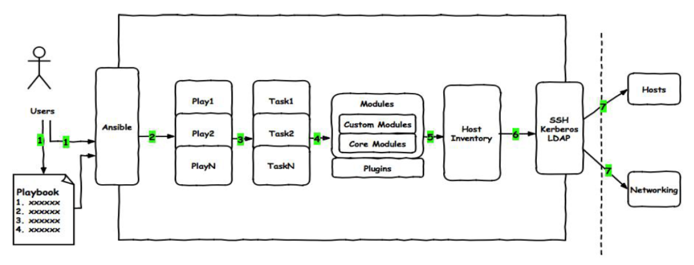
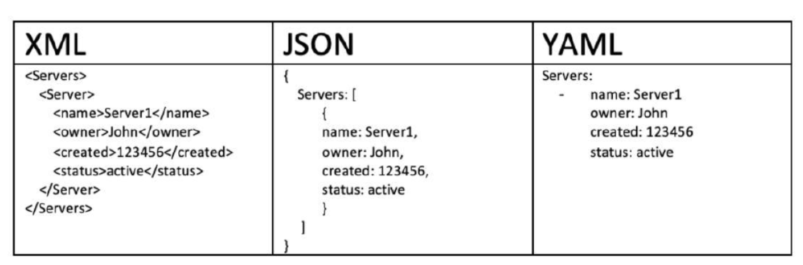
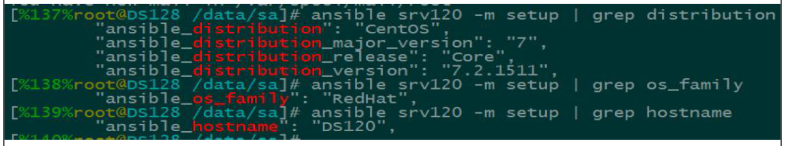
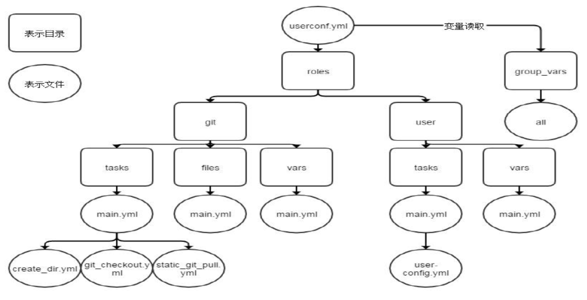
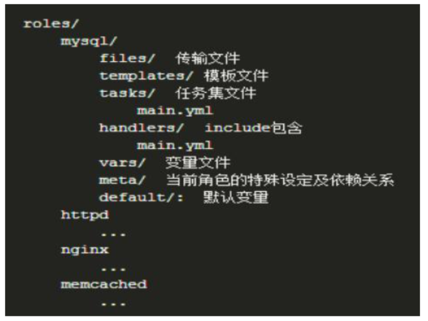
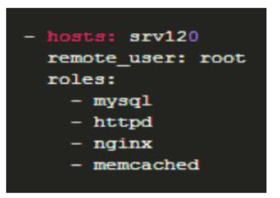

运维自动化之ANSIBLE
本章内容
- 运维自动化发展历程及技术应用
- Ansible命令使用
- Ansible常用模块详解
- YAML语法简介
- Ansible playbook基础
- Playbook变量、tags、handlers使用
- Playbook模板templates
- Playbook条件判断 when
- Playbook字典 with_items
- Ansible Roles
运维自动化发展历程及技术应用
企业实际应用场景分析
Dev开发环境
使用者：程序员
功能：程序员开发软件，测试BUG的环境
管理者：程序员
测试环境
使用者：QA测试工程师
功能：测试经过Dev环境测试通过的软件的功能
管理者：运维
说明：测试环境往往有多套,测试环境满足测试功能即可，不宜过多
1、测试人员希望测试环境有多套,公司的产品多产品线并发，即多个版本，意味着多个版本同步测试
2、通常测试环境有多少套和产品线数量保持一样
发布环境：代码发布机，有些公司为堡垒机（安全屏障）
使用者：运维
功能：发布代码至生产环境
管理者：运维（有经验）
发布机：往往需要有2台（主备）
生产环境
使用者：运维，少数情况开放权限给核心开发人员，极少数公司将权限完全
开放给开发人员并其维护
功能：对用户提供公司产品的服务
管理者：只能是运维
生产环境服务器数量：一般比较多，且应用非常重要。往往需要自动工具协助部署配置应用
灰度环境（生产环境的一部分）
使用者：运维
功能：在全量发布代码前将代码的功能面向少量精准用户发布的环境,可基
于主机或用户执行灰度发布
案例：共100台生产服务器，先发布其中的10台服务器，这10台服务器就是灰度服务器
管理者：运维
灰度环境：往往该版本功能变更较大，为保险起见特意先让一部分用户优化体验该功能，
待这部分用户使用没有重大问题的时候，再全量发布至所有服务器
程序发布
程序发布要求：
不能导致系统故障或造成系统完全不可用
不能影响用户体验
预发布验证：
新版本的代码先发布到服务器（跟线上环境配置完全相同，只是未接入到调度器）
灰度发布：
基于主机，用户，业务
发布路径：
/webapp/tuangou
/webapp/tuangou-1.1
/webapp/tuangou-1.2
发布过程：在调度器上下线一批主机(标记为maintanance状态) --> 关闭服务 -->
部署新版本的应用程序 --> 启动服务 --> 在调度器上启用这一批服务器
自动化灰度发布：脚本、发布平台
运维自动化发展历程及技术应用
自动化运维应用场景
常用自动化运维工具
Ansible：python，Agentless，中小型应用环境
Saltstack：python，一般需部署agent，执行效率更高
Puppet：ruby, 功能强大，配置复杂，重型,适合大型环境
Fabric：python，agentless
Chef：ruby，国内应用少
Cfengine
func
企业级自动化运维工具应用实战ansible
公司计划在年底做一次大型市场促销活动，全面冲刺下交易额，为明年的上市做准备。
公司要求各业务组对年底大促做准备，运维部要求所有业务容量进行三倍的扩容，
并搭建出多套环境可以共开发和测试人员做测试，运维老大为了在年底有所表现，
要求运维部门同学尽快实现，当你接到这个任务时，有没有更快的解决方案？
Ansible发展史
Ansible
Michael DeHaan（ Cobbler 与 Func 作者）
名称来自《安德的游戏》中跨越时空的即时通信工具
2012-03-09，发布0.0.1版，2015-10-17，Red Hat宣布收购
官网：https://www.ansible.com/
官方文档：https://docs.ansible.com/
同类自动化工具GitHub关注程度（2016-07-10）
特性
1> 模块化：调用特定的模块，完成特定任务
2> Paramiko（python对ssh的实现），PyYAML，Jinja2（模板语言）三个关键模块
3> 支持自定义模块
4> 基于Python语言实现
5> 部署简单，基于python和SSH(默认已安装)，agentless
6> 安全，基于OpenSSH
7> 支持playbook编排任务
8> 幂等性：一个任务执行1遍和执行n遍效果一样，不因重复执行带来意外情况
9> 无需代理不依赖PKI（无需ssl）
10> 可使用任何编程语言写模块
11> YAML格式，编排任务，支持丰富的数据结构
12> 较强大的多层解决方案
Ansible架构
ansible的作用以及工作结构
1、ansible简介：
ansible是新出现的自动化运维工具，基于Python开发，
集合了众多运维工具（puppet、cfengine、chef、func、fabric）的优点，
实现了批量系统配置、批量程序部署、批量运行命令等功能。
ansible是基于模块工作的，本身没有批量部署的能力。
真正具有批量部署的是ansible所运行的模块，ansible只是提供一种框架。
主要包括：
(1)、连接插件connection plugins：负责和被监控端实现通信；
(2)、host inventory：指定操作的主机，是一个配置文件里面定义监控的主机；
(3)、各种模块核心模块、command模块、自定义模块；
(4)、借助于插件完成记录日志邮件等功能；
(5)、playbook：剧本执行多个任务时，非必需可以让节点一次性运行多个任务。
2、ansible的架构：连接其他主机默认使用ssh协议
Ansible工作原理

Ansible主要组成部分
ANSIBLE PLAYBOOKS：任务剧本（任务集），编排定义Ansible任务集的配置文件，
由Ansible顺序依次执行，通常是JSON格式的YML文件
INVENTORY：Ansible管理主机的清单 /etc/anaible/hosts
MODULES： Ansible执行命令的功能模块，多数为内置核心模块，也可自定义
PLUGINS： 模块功能的补充，如连接类型插件、循环插件、变量插件、过滤插件等，该功能不常用
API： 供第三方程序调用的应用程序编程接口
ANSIBLE： 组合INVENTORY、API、MODULES、PLUGINS的绿框，可以理解为是ansible命令工具，其为核心执行工具
Ansible命令执行来源：
1> USER，普通用户，即SYSTEM ADMINISTRATOR
2> CMDB（配置管理数据库） API 调用
3> PUBLIC/PRIVATE CLOUD API调用 (公有私有云的API接口调用)
4> USER-> Ansible Playbook -> Ansibile
利用ansible实现管理的方式：
1> Ad-Hoc 即ansible单条命令，主要用于临时命令使用场景
2> Ansible-playbook 主要用于长期规划好的，大型项目的场景，需要有前期的规划过程
Ansible-playbook（剧本）执行过程
将已有编排好的任务集写入Ansible-Playbook
通过ansible-playbook命令分拆任务集至逐条ansible命令，按预定规则逐条执行
Ansible主要操作对象
HOSTS主机
NETWORKING网络设备
注意事项:
执行ansible的主机一般称为主控端，中控，master或堡垒机
主控端Python版本需要2.6或以上
被控端Python版本小于2.4需要安装python-simplejson
被控端如开启SELinux需要安装libselinux-python
windows不能做为主控端
ansible不是服务,不会一直启动,只是需要的时候启动
安装
rpm包安装: EPEL源
yum install ansible
编译安装:
yum -y install python-jinja2 PyYAML python-paramiko python-babel
python-crypto
tar xf ansible-1.5.4.tar.gz
cd ansible-1.5.4
python setup.py build
python setup.py install
mkdir /etc/ansible
cp -r examples/* /etc/ansible
Git方式:
git clone git://github.com/ansible/ansible.git --recursive
cd ./ansible
source ./hacking/env-setup
pip安装： pip是安装Python包的管理器，类似yum
yum install python-pip python-devel
yum install gcc glibc-devel zibl-devel rpm-bulid openssl-devel
pip install --upgrade pip
pip install ansible --upgrade
确认安装：
ansible --version
相关文件
配置文件
/etc/ansible/ansible.cfg 主配置文件,配置ansible工作特性(一般无需修改)
/etc/ansible/hosts 主机清单(将被管理的主机放到此文件)
/etc/ansible/roles/ 存放角色的目录
程序
/usr/bin/ansible 主程序，临时命令执行工具
/usr/bin/ansible-doc 查看配置文档，模块功能查看工具
/usr/bin/ansible-galaxy 下载/上传优秀代码或Roles模块的官网平台
/usr/bin/ansible-playbook 定制自动化任务，编排剧本工具
/usr/bin/ansible-pull 远程执行命令的工具
/usr/bin/ansible-vault 文件加密工具
/usr/bin/ansible-console 基于Console界面与用户交互的执行工具
主机清单inventory
Inventory 主机清单
1> ansible的主要功用在于批量主机操作，为了便捷地使用其中的部分主机，可以在inventory file中将其分组命名
2> 默认的inventory file为/etc/ansible/hosts
3> inventory file可以有多个，且也可以通过Dynamic Inventory来动态生成
/etc/ansible/hosts文件格式
inventory文件遵循INI文件风格，中括号中的字符为组名。
可以将同一个主机同时归并到多个不同的组中；
此外，当如若目标主机使用了非默认的SSH端口，还可以在主机名称之后使用冒号加端口号来标明
ntp.magedu.com 不分组,直接加
[webservers] webservers组
www1.magedu.com:2222 可以指定端口
www2.magedu.com
[dbservers]
db1.magedu.com
db2.magedu.com
db3.magedu.com
如果主机名称遵循相似的命名模式，还可以使用列表的方式标识各主机
示例：
[websrvs]
www[1:100].example.com ip: 1-100
[dbsrvs]
db-[a:f].example.com dba-dbff
ansible 配置文件
Ansible 配置文件/etc/ansible/ansible.cfg （一般保持默认）
vim /etc/ansible/ansible.cfg
[defaults]
#inventory = /etc/ansible/hosts # 主机列表配置文件
#library = /usr/share/my_modules/ # 库文件存放目录
#remote_tmp = $HOME/.ansible/tmp # 临时py命令文件存放在远程主机目录
#local_tmp = $HOME/.ansible/tmp # 本机的临时命令执行目录
#forks = 5 # 默认并发数,同时可以执行5次
#sudo_user = root # 默认sudo 用户
#ask_sudo_pass = True # 每次执行ansible命令是否询问ssh密码
#ask_pass = True # 每次执行ansible命令是否询问ssh口令
#remote_port = 22 # 远程主机的端口号(默认22)
建议优化项：
host_key_checking = False # 检查对应服务器的host_key，建议取消注释
log_path=/var/log/ansible.log # 日志文件,建议取消注释
module_name = command # 默认模块
ansible系列命令
Ansible系列命令
ansible ansible-doc ansible-playbook ansible-vault ansible-console
ansible-galaxy ansible-pull
ansible-doc: 显示模块帮助
ansible-doc [options] [module...]
-a 显示所有模块的文档
-l, --list 列出可用模块
-s, --snippet 显示指定模块的playbook片段(简化版,便于查找语法)
示例：
ansible-doc -l 列出所有模块
ansible-doc ping 查看指定模块帮助用法
ansible-doc -s ping 查看指定模块帮助用法
ansible
ansible通过ssh实现配置管理、应用部署、任务执行等功能，
建议配置ansible端能基于密钥认证的方式联系各被管理节点
ansible <host-pattern> [-m module_name] [-a args]
ansible +被管理的主机(ALL) +模块 +参数
--version 显示版本
-m module 指定模块，默认为command
-v 详细过程 –vv -vvv更详细
--list-hosts 显示主机列表，可简写 --list
-k, --ask-pass 提示输入ssh连接密码,默认Key验证
-C, --check 检查，并不执行
-T, --timeout=TIMEOUT 执行命令的超时时间,默认10s
-u, --user=REMOTE_USER 执行远程执行的用户
-b, --become 代替旧版的sudo切换
--become-user=USERNAME 指定sudo的runas用户,默认为root
-K, --ask-become-pass 提示输入sudo时的口令
ansible all --list 列出所有主机
ping模块: 探测网络中被管理主机是否能够正常使用 走ssh协议
如果对方主机网络正常,返回pong
ansible-doc -s ping 查看ping模块的语法
检测所有主机的网络状态
1> 默认情况下连接被管理的主机是ssh基于key验证,如果没有配置key,权限将会被拒绝
因此需要指定以谁的身份连接,输入用户密码,必须保证被管理主机用户密码一致
ansible all -m ping -k
2> 或者实现基于key验证 将公钥ssh-copy-id到被管理的主机上 , 实现免密登录
ansible all -m ping
ansible的Host-pattern
ansible的Host-pattern
匹配主机的列表
All ：表示所有Inventory中的所有主机
ansible all –m ping
* :通配符
ansible "*" -m ping (*表示所有主机)
ansible 192.168.1.* -m ping
ansible "*srvs" -m ping
或关系 ":"
ansible "websrvs:appsrvs" -m ping
ansible “192.168.1.10:192.168.1.20” -m ping
逻辑与 ":&"
ansible "websrvs:&dbsrvs" –m ping
在websrvs组并且在dbsrvs组中的主机
逻辑非 ":!"
ansible 'websrvs:!dbsrvs' –m ping
在websrvs组，但不在dbsrvs组中的主机
注意：此处为单引号
综合逻辑
ansible 'websrvs:dbsrvs:&appsrvs:!ftpsrvs' –m ping
正则表达式
ansible "websrvs:&dbsrvs" –m ping
ansible "~(web|db).*\.magedu\.com" –m ping
ansible命令执行过程
ansible命令执行过程
1. 加载自己的配置文件 默认/etc/ansible/ansible.cfg
2. 加载自己对应的模块文件，如command
3. 通过ansible将模块或命令生成对应的临时py文件，
并将该文件传输至远程服务器的对应执行用户$HOME/.ansible/tmp/ansible-tmp-数字/XXX.PY文件
4. 给文件+x执行
5. 执行并返回结果
6. 删除临时py文件，sleep 0退出
执行状态：
绿色：执行成功并且不需要做改变的操作
黄色：执行成功并且对目标主机做变更
红色：执行失败
ansible使用示例
示例
以wang用户执行ping存活检测
ansible all -m ping -u wang -k
以wang sudo至root执行ping存活检测
ansible all -m ping -u wang -k -b
以wang sudo至mage用户执行ping存活检测
ansible all -m ping -u wang -k -b --become-user=mage
以wang sudo至root用户执行ls
ansible all -m command -u wang -a 'ls /root' -b --become-user=root -k -K
ansible ping模块测试连接
ansible 192.168.38.126,192.168.38.127 -m ping -k
ansible常用模块
模块文档：https://docs.ansible.com/ansible/latest/modules/modules_by_category.html
Command：在远程主机执行命令，默认模块，可忽略-m选项
> ansible srvs -m command -a 'service vsftpd start'
> ansible srvs -m command -a 'echo adong |passwd --stdin 123456'
此命令不支持 $VARNAME < > | ; & 等,用shell模块实现
chdir: 进入到被管理主机目录
creates: 如果有一个目录是存在的,步骤将不会运行Command命令
ansible websrvs -a 'chdir=/data/ ls'
Shell：和command相似，用shell执行命令
> ansible all -m shell -a 'getenforce' 查看SELINUX状态
> ansible all -m shell -a "sed -i 's/SELINUX=.*/SELINUX=disabled' /etc/selinux/config"
> ansible srv -m shell -a 'echo magedu |passwd –stdin wang'
调用bash执行命令 类似 cat /tmp/stanley.md | awk -F'|' '{print $1,$2}' &> /tmp/example.txt
这些复杂命令，即使使用shell也可能会失败，
解决办法：写到脚本时，copy到远程执行，再把需要的结果拉回执行命令的机器
修改配置文件,使shell作为默认模块
vim /etc/ansible/ansible.cfg
module_name = shell
Script：在远程主机上运行ansible服务器上的脚本
> -a "/PATH/TO/SCRIPT_FILE"
> ansible websrvs -m script -a /data/test.sh
Copy：从主控端复制文件到远程主机
src : 源文件 指定拷贝文件的本地路径 (如果有/ 则拷贝目录内容,比拷贝目录本身)
dest: 指定目标路径
mode: 设置权限
backup: 备份源文件
content: 代替src 指定本机文件内容,生成目标主机文件
> ansible websrvs -m copy -a "src=/root/test1.sh dest=/tmp/test2.showner=wang mode=600 backup=yes"
如果目标存在，默认覆盖，此处指定先备份
> ansible websrvs -m copy -a "content='test content\nxxx' dest=/tmp/test.txt"
指定内容，直接生成目标文件
Fetch：从远程主机提取文件至主控端，copy相反，目前不支持目录,可以先打包,再提取文件
> ansible websrvs -m fetch -a 'src=/root/test.sh dest=/data/scripts'
会生成每个被管理主机不同编号的目录,不会发生文件名冲突
> ansible all -m shell -a 'tar jxvf test.tar.gz /root/test.sh'
> ansible all -m fetch -a 'src=/root/test.tar.gz dest=/data/'
File：设置文件属性
path: 要管理的文件路径 (强制添加)
recurse: 递归,文件夹要用递归
src: 创建硬链接,软链接时,指定源目标,配合'state=link' 'state=hard' 设置软链接,硬链接
state: 状态
absent 缺席,删除
> ansible websrvs -m file -a 'path=/app/test.txt state=touch' 创建文件
> ansible websrvs -m file -a "path=/data/testdir state=directory" 创建目录
> ansible websrvs -m file -a "path=/root/test.sh owner=wang mode=755" 设置权限755
> ansible websrvs -m file -a 'src=/data/testfile dest=/data/testfile-link state=link' 创建软链接
unarchive：解包解压缩，有两种用法：
1、将ansible主机上的压缩包传到远程主机后解压缩至特定目录，设置copy=yes.
2、将远程主机上的某个压缩包解压缩到指定路径下，设置copy=no
常见参数：
copy：默认为yes，当copy=yes，拷贝的文件是从ansible主机复制到远程主机上，
如果设置为copy=no，会在远程主机上寻找src源文件
src： 源路径，可以是ansible主机上的路径，也可以是远程主机上的路径，
如果是远程主机上的路径，则需要设置copy=no
dest：远程主机上的目标路径
mode：设置解压缩后的文件权限
示例：
ansible websrvs -m unarchive -a 'src=foo.tgz dest=/var/lib/foo'
#默认copy为yes ,将本机目录文件解压到目标主机对应目录下
ansible websrvs -m unarchive -a 'src=/tmp/foo.zip dest=/data copy=no mode=0777'
# 解压被管理主机的foo.zip到data目录下, 并设置权限777
ansible websrvs -m unarchive -a 'src=https://example.com/example.zip dest=/data copy=no'
Archive：打包压缩
> ansible all -m archive -a 'path=/etc/sysconfig dest=/data/sysconfig.tar.bz2 format=bz2 owner=wang mode=0777'
将远程主机目录打包
path: 指定路径
dest: 指定目标文件
format: 指定打包格式
owner: 指定所属者
mode: 设置权限
Hostname：管理主机名
ansible appsrvs -m hostname -a "name=app.adong.com" 更改一组的主机名
ansible 192.168.38.103 -m hostname -a "name=app2.adong.com" 更改单个主机名
Cron：计划任务
支持时间：minute,hour,day,month,weekday
> ansible websrvs -m cron -a "minute=*/5 job='/usr/sbin/ntpdate 172.16.0.1 &>/dev/null' name=Synctime"
创建任务
> ansible websrvs -m cron -a 'state=absent name=Synctime'
删除任务
> ansible websrvs -m cron -a 'minute=*/10 job='/usr/sbin/ntpdate 172.30.0.100" name=synctime disabled=yes'
注释任务,不在生效
Yum：管理包
ansible websrvs -m yum -a 'list=httpd' 查看程序列表
ansible websrvs -m yum -a 'name=httpd state=present' 安装
ansible websrvs -m yum -a 'name=httpd state=absent' 删除
可以同时安装多个程序包
Service：管理服务
ansible srv -m service -a 'name=httpd state=stopped' 停止服务
ansible srv -m service -a 'name=httpd state=started enabled=yes' 启动服务,并设为开机自启
ansible srv -m service -a 'name=httpd state=reloaded' 重新加载
ansible srv -m service -a 'name=httpd state=restarted' 重启服务
User：管理用户
home 指定家目录路径
system 指定系统账号
group 指定组
remove 清除账户
shell 指定shell类型
ansible websrvs -m user -a 'name=user1 comment="test user" uid=2048 home=/app/user1 group=root'
ansible websrvs -m user -a 'name=sysuser1 system=yes home=/app/sysuser1'
ansible websrvs -m user -a 'name=user1 state=absent remove=yes' 清空用户所有数据
ansible websrvs -m user -a 'name=app uid=88 system=yes home=/app groups=root shell=/sbin/nologin password="$1$zfVojmPy$ZILcvxnXljvTI2PhP2Iqv1"' 创建用户
ansible websrvs -m user -a 'name=app state=absent' 不会删除家目录
安装mkpasswd
yum insatll expect
mkpasswd 生成口令
openssl passwd -1 生成加密口令
删除用户及家目录等数据
Group：管理组
ansible srv -m group -a "name=testgroup system=yes" 创建组
ansible srv -m group -a "name=testgroup state=absent" 删除组
ansible系列命令
可以通过网上写好的
ansible-galaxy
> 连接 https://galaxy.ansible.com
下载相应的roles(角色)
> 列出所有已安装的galaxy
ansible-galaxy list
> 安装galaxy
ansible-galaxy install geerlingguy.redis
> 删除galaxy
ansible-galaxy remove geerlingguy.redis
ansible-pull
推送命令至远程，效率无限提升，对运维要求较高
ansible-playbook 可以引用按照标准的yml语言写的脚本
执行playbook
示例：ansible-playbook hello.yml
cat hello.yml
#hello world yml file
- hosts: websrvs
remote_user: root
tasks:
- name: hello world
command: /usr/bin/wall hello world
ansible-vault (了解)
功能：管理加密解密yml文件
ansible-vault [create|decrypt|edit|encrypt|rekey|view]
ansible-vault encrypt hello.yml 加密
ansible-vault decrypt hello.yml 解密
ansible-vault view hello.yml 查看
ansible-vault edit hello.yml 编辑加密文件
ansible-vault rekey hello.yml 修改口令
ansible-vault create new.yml 创建新文件
Ansible-console：2.0+新增，可交互执行命令，支持tab (了解)
root@test (2)[f:10] $
执行用户@当前操作的主机组 (当前组的主机数量)[f:并发数]$
设置并发数： forks n 例如： forks 10
切换组： cd 主机组 例如： cd web
列出当前组主机列表： list
列出所有的内置命令： ?或help
示例：
root@all (2)[f:5]$ list
root@all (2)[f:5]$ cd appsrvs
root@appsrvs (2)[f:5]$ list
root@appsrvs (2)[f:5]$ yum name=httpd state=present
root@appsrvs (2)[f:5]$ service name=httpd state=started
playbook
> playbook是由一个或多个"play"组成的列表
> play的主要功能在于将预定义的一组主机，装扮成事先通过ansible中的task定义好的角色。
Task实际是调用ansible的一个module，将多个play组织在一个playbook中，
即可以让它们联合起来，按事先编排的机制执行预定义的动作
> Playbook采用YAML语言编写
playbook图解

用户通过ansible命令直接调用yml语言写好的playbook,playbook由多条play组成
每条play都有一个任务(task)相对应的操作,然后调用模块modules，应用在主机清单上,通过ssh远程连接
从而控制远程主机或者网络设备
YAML介绍
YAML是一个可读性高的用来表达资料序列的格式。
YAML参考了其他多种语言，包括：XML、C语言、Python、Perl以及电子邮件格式RFC2822等。
Clark Evans在2001年在首次发表了这种语言，另外Ingy döt Net与Oren Ben-Kiki也是这语言的共同设计者
YAML Ain't Markup Language，即YAML不是XML。
不过，在开发的这种语言时，YAML的意思其实是："Yet Another Markup Language"（仍是一种标记语言）
特性
YAML的可读性好
YAML和脚本语言的交互性好
YAML使用实现语言的数据类型
YAML有一个一致的信息模型
YAML易于实现
YAML可以基于流来处理
YAML表达能力强，扩展性好
更多的内容及规范参见：http://www.yaml.org
YAML语法简介
> 在单一档案中，可用连续三个连字号(——)区分多个档案。
另外，还有选择性的连续三个点号( ... )用来表示档案结尾
> 次行开始正常写Playbook的内容，一般建议写明该Playbook的功能
> 使用#号注释代码
> 缩进必须是统一的，不能空格和tab混用
> 缩进的级别也必须是一致的，同样的缩进代表同样的级别，程序判别配置的级别是通过缩进结合换行来实现的
> YAML文件内容是区别大小写的，k/v的值均需大小写敏感
> 多个k/v可同行写也可换行写，同行使用:分隔
> v可是个字符串，也可是另一个列表[]
> 一个完整的代码块功能需最少元素需包括 name 和 task
> 一个name只能包括一个task
> YAML文件扩展名通常为yml或yaml
YAML语法简介
List：列表，其所有元素均使用“-”打头
列表代表同一类型的元素
示例：
# A list of tasty fruits
- Apple
- Orange
- Strawberry
- Mango
Dictionary：字典，通常由多个key与value构成 键值对
示例：
---
# An employee record
name: Example Developer
job: Developer
skill: Elite
也可以将key:value放置于{}中进行表示，用,分隔多个key:value
示例：
---
# An employee record
{name: Example Developer, job: Developer, skill: Elite} 有空格
YAML语法
YAML的语法和其他高阶语言类似，并且可以简单表达清单、散列表、标量等数据结构。
其结构（Structure）通过空格来展示，序列（Sequence）里的项用"-"来代表，Map里的键值对用":"分隔
示例
name: John Smith
age: 41
gender: Male
spouse:
name: Jane Smith
age: 37
gender: Female
children:
- name: Jimmy Smith
age: 17
gender: Male
- name: Jenny Smith
age 13
gender: Female
三种常见的数据交换格式

Playbook核心元素
Hosts 执行的远程主机列表(应用在哪些主机上)
Tasks 任务集
Variables 内置变量或自定义变量在playbook中调用
Templates模板 可替换模板文件中的变量并实现一些简单逻辑的文件
Handlers和notify结合使用，由特定条件触发的操作，满足条件方才执行，否则不执行
tags标签 指定某条任务执行，用于选择运行playbook中的部分代码。
ansible具有幂等性，因此会自动跳过没有变化的部分，
即便如此，有些代码为测试其确实没有发生变化的时间依然会非常地长。
此时，如果确信其没有变化，就可以通过tags跳过此些代码片断
ansible-playbook -t tagsname useradd.yml
playbook基础组件
Hosts：
> playbook中的每一个play的目的都是为了让特定主机以某个指定的用户身份执行任务。
hosts用于指定要执行指定任务的主机，须事先定义在主机清单中
> 可以是如下形式：
one.example.com
one.example.com:two.example.com
192.168.1.50
192.168.1.*
> Websrvs:dbsrvs 或者，两个组的并集
> Websrvs:&dbsrvs 与，两个组的交集
> webservers:!phoenix 在websrvs组，但不在dbsrvs组
示例: - hosts: websrvs：dbsrvs
remote_user:
可用于Host和task中。
也可以通过指定其通过sudo的方式在远程主机上执行任务，其可用于play全局或某任务；
此外，甚至可以在sudo时使用sudo_user指定sudo时切换的用户
- hosts: websrvs
remote_user: root (可省略,默认为root) 以root身份连接
tasks: 指定任务
- name: test connection
ping:
remote_user: magedu
sudo: yes 默认sudo为root
sudo_user:wang sudo为wang
task列表和action
任务列表task:由多个动作,多个任务组合起来的,每个任务都调用的模块,一个模块一个模块执行
1> play的主体部分是task list，task list中的各任务按次序逐个在hosts中指定的所有主机上执行，
即在所有主机上完成第一个任务后，再开始第二个任务
2> task的目的是使用指定的参数执行模块，而在模块参数中可以使用变量。
模块执行是幂等的，这意味着多次执行是安全的，因为其结果均一致
3> 每个task都应该有其name，用于playbook的执行结果输出，建议其内容能清晰地描述任务执行步骤。
如果未提供name，则action的结果将用于输出
tasks：任务列表
两种格式：
(1) action: module arguments
(2) module: arguments 建议使用 模块: 参数
注意：shell和command模块后面跟命令，而非key=value
某任务的状态在运行后为changed时，可通过"notify"通知给相应的handlers
任务可以通过"tags"打标签，可在ansible-playbook命令上使用-t指定进行调用
示例：
tasks:
- name: disable selinux 描述
command: /sbin/setenforce 0 模块名: 模块对应的参数
如果命令或脚本的退出码不为零，可以使用如下方式替代
tasks:
- name: run this command and ignore the result
shell: /usr/bin/somecommand || /bin/true
转错为正 如果命令失败则执行 true
或者使用ignore_errors来忽略错误信息
tasks:
- name: run this command and ignore the result
shell: /usr/bin/somecommand
ignore_errors: True 忽略错误
运行playbook
运行playbook的方式
ansible-playbook <filename.yml> ... [options]
常见选项
--check -C 只检测可能会发生的改变，但不真正执行操作
(只检查语法,如果执行过程中出现问题,-C无法检测出来)
(执行playbook生成的文件不存在,后面的程序如果依赖这些文件,也会导致检测失败)
--list-hosts 列出运行任务的主机
--list-tags 列出tag (列出标签)
--list-tasks 列出task (列出任务)
--limit 主机列表 只针对主机列表中的主机执行
-v -vv -vvv 显示过程
示例
ansible-playbook hello.yml --check 只检测
ansible-playbook hello.yml --list-hosts 显示运行任务的主机
ansible-playbook hello.yml --limit websrvs 限制主机
Playbook VS ShellScripts
安装httpd
SHELL脚本
#!/bin/bash
# 安装Apache
yum install --quiet -y httpd
# 复制配置文件
cp /tmp/httpd.conf /etc/httpd/conf/httpd.conf
cp/tmp/vhosts.conf /etc/httpd/conf.d/
# 启动Apache，并设置开机启动
service httpd start
chkconfig httpd on
Playbook定义
---
- hosts: all
remote_user: root
tasks:
- name: "安装Apache"
yum: name=httpd yum模块:安装httpd
- name: "复制配置文件"
copy: src=/tmp/httpd.conf dest=/etc/httpd/conf/ copy模块: 拷贝文件
- name: "复制配置文件"
copy: src=/tmp/vhosts.conf dest=/etc/httpd/conf.d/
- name: "启动Apache，并设置开机启动"
service: name=httpd state=started enabled=yes service模块: 启动服务
示例:Playbook 创建用户
示例：sysuser.yml
---
- hosts: all
remote_user: root
tasks:
- name: create mysql user
user: name=mysql system=yes uid=36
- name: create a group
group: name=httpd system=yes
Playbook示例 安装httpd服务
示例：httpd.yml
- hosts: websrvs
remote_user: root
tasks:
- name: Install httpd
yum: name=httpd state=present
- name: Install configure file
copy: src=files/httpd.conf dest=/etc/httpd/conf/
- name: start service
service: name=httpd state=started enabled=yes
Playbook示例 安装nginx服务
示例 nginx.yml
- hosts: all
remote_user: root
tasks:
- name: add group nginx
user: name=nginx state=present
- name: add user nginx
user: name=nginx state=present group=nginx
- name: Install Nginx
yum: name=nginx state=present
- name: Start Nginx
service: name=nginx state=started enabled=yes
handlers和notify结合使用触发条件
Handlers 实际上就是一个触发器
是task列表，这些task与前述的task并没有本质上的不同,用于当关注的资源发生变化时，才会采取一定的操作
Notify此action可用于在每个play的最后被触发，
这样可避免多次有改变发生时每次都执行指定的操作，仅在所有的变化发生完成后一次性地执行指定操作。
在notify中列出的操作称为handler，也即notify中调用handler中定义的操作
Playbook中handlers使用
- hosts: websrvs
remote_user: root
tasks:
- name: Install httpd
yum: name=httpd state=present
- name: Install configure file
copy: src=files/httpd.conf dest=/etc/httpd/conf/
notify: restart httpd
- name: ensure apache is running
service: name=httpd state=started enabled=yes
handlers:
- name: restart httpd
service: name=httpd state=restarted
示例
- hosts: webnodes
vars:
http_port: 80
max_clients: 256
remote_user: root
tasks:
- name: ensure apache is at the latest version
yum: name=httpd state=latest
- name: ensure apache is running
service: name=httpd state=started
- name: Install configure file
copy: src=files/httpd.conf dest=/etc/httpd/conf/
notify: restart httpd
handlers:
- name: restart httpd
service: name=httpd state=restarted
示例
- hosts: websrvs
remote_user: root
tasks:
- name: add group nginx
tags: user
user: name=nginx state=present
- name: add user nginx
user: name=nginx state=present group=nginx
- name: Install Nginx
yum: name=nginx state=present
- name: config
copy: src=/root/config.txt dest=/etc/nginx/nginx.conf
notify:
- Restart Nginx
- Check Nginx Process
handlers:
- name: Restart Nginx
service: name=nginx state=restarted enabled=yes
- name: Check Nginx process
shell: killall -0 nginx > /tmp/nginx.log
Playbook中tags使用
tage: 添加标签
可以指定某一个任务添加一个标签,添加标签以后,想执行某个动作可以做出挑选来执行
多个动作可以使用同一个标签
示例：httpd.yml
- hosts: websrvs
remote_user: root
tasks:
- name: Install httpd
yum: name=httpd state=present
tage: install
- name: Install configure file
copy: src=files/httpd.conf dest=/etc/httpd/conf/
tags: conf
- name: start httpd service
tags: service
service: name=httpd state=started enabled=yes
ansible-playbook –t install,conf httpd.yml 指定执行install,conf 两个标签
示例
//heartbeat.yaml
- hosts: hbhosts
remote_user: root
tasks:
- name: ensure heartbeat latest version
yum: name=heartbeat state=present
- name: authkeys configure file
copy: src=/root/hb_conf/authkeys dest=/etc/ha.d/authkeys
- name: authkeys mode 600
file: path=/etc/ha.d/authkeys mode=600
notify:
- restart heartbeat
- name: ha.cf configure file
copy: src=/root/hb_conf/ha.cf dest=/etc/ha.d/ha.cf
notify:
- restart heartbeat
handlers:
- name: restart heartbeat
service: name=heartbeat state=restarted
Playbook中tags使用
- hosts: testsrv
remote_user: root
tags: inshttpd 针对整个playbook添加tage
tasks:
- name: Install httpd
yum: name=httpd state=present
- name: Install configure file
copy: src=files/httpd.conf dest=/etc/httpd/conf/
tags: rshttpd
notify: restart httpd
handlers:
- name: restart httpd
service: name=httpd status=restarted
ansible-playbook –t rshttpd httpd2.yml
Playbook中变量的使用
变量名：仅能由字母、数字和下划线组成，且只能以字母开头
变量来源：
1> ansible setup facts 远程主机的所有变量都可直接调用 (系统自带变量)
setup模块可以实现系统中很多系统信息的显示
可以返回每个主机的系统信息包括:版本、主机名、cpu、内存
ansible all -m setup -a 'filter="ansible_nodename"' 查询主机名
ansible all -m setup -a 'filter="ansible_memtotal_mb"' 查询主机内存大小
ansible all -m setup -a 'filter="ansible_distribution_major_version"' 查询系统版本
ansible all -m setup -a 'filter="ansible_processor_vcpus"' 查询主机cpu个数
2> 在/etc/ansible/hosts(主机清单)中定义变量
普通变量：主机组中主机单独定义，优先级高于公共变量(单个主机 )
公共(组)变量：针对主机组中所有主机定义统一变量(一组主机的同一类别)
3> 通过命令行指定变量，优先级最高
ansible-playbook –e varname=value
4> 在playbook中定义
vars:
- var1: value1
- var2: value2
5> 在独立的变量YAML文件中定义
6> 在role中定义
变量命名:
变量名仅能由字母、数字和下划线组成，且只能以字母开头
变量定义：key=value
示例：http_port=80
变量调用方式：
1> 通过{{ variable_name }} 调用变量，且变量名前后必须有空格，有时用“{{ variable_name }}”才生效
2> ansible-playbook –e 选项指定
ansible-playbook test.yml -e "hosts=www user=magedu"
在主机清单中定义变量,在ansible中使用变量
vim /etc/ansible/hosts
[appsrvs]
192.168.38.17 http_port=817 name=www
192.168.38.27 http_port=827 name=web
调用变量
ansible appsrvs -m hostname -a'name={{name}}' 更改主机名为各自被定义的变量
针对一组设置变量
[appsrvs:vars]
make="-"
ansible appsrvs -m hostname -a 'name={{name}}{{mark}}{{http_port}}' ansible调用变量
Ansible基础元素
Facts：是由正在通信的远程目标主机发回的信息，这些信息被保存在ansible变量中。
要获取指定的远程主机所支持的所有facts，可使用如下命令进行
ansible websrvs -m setup
通过命令行传递变量
在运行playbook的时候也可以传递一些变量供playbook使用
示例：
ansible-playbook test.yml -e "hosts=www user=magedu"
register
把任务的输出定义为变量，然后用于其他任务
示例:
tasks:
- shell: /usr/bin/foo
register: foo_result
ignore_errors: True
示例：使用setup变量
示例：var.yml
- hosts: websrvs
remote_user: root
tasks:
- name: create log file
file: name=/var/log/ {{ ansible_fqdn }} state=touch
ansible-playbook var.yml
示例：变量
示例：var.yml
- hosts: websrvs
remote_user: root
tasks:
- name: install package
yum: name={{ pkname }} state=present
ansible-playbook –e pkname=httpd var.yml
示例：变量
示例：var.yml
- hosts: websrvs
remote_user: root
vars:
- username: user1
- groupname: group1
tasks:
- name: create group
group: name={{ groupname }} state=present
- name: create user
user: name={{ username }} state=present
ansible-playbook var.yml
ansible-playbook -e "username=user2 groupname=group2” var2.yml
变量
主机变量
可以在inventory中定义主机时为其添加主机变量以便于在playbook中使用
示例：
[websrvs]
www1.magedu.com http_port=80 maxRequestsPerChild=808
www2.magedu.com http_port=8080 maxRequestsPerChild=909
组变量
组变量是指赋予给指定组内所有主机上的在playbook中可用的变量
示例：
[websrvs]
www1.magedu.com
www2.magedu.com
[websrvs:vars]
ntp_server=ntp.magedu.com
nfs_server=nfs.magedu.com
示例：变量
普通变量
[websrvs]
192.168.99.101 http_port=8080 hname=www1
192.168.99.102 http_port=80 hname=www2
公共（组）变量
[websvrs:vars]
http_port=808
mark="_"
[websrvs]
192.168.99.101 http_port=8080 hname=www1
192.168.99.102 http_port=80 hname=www2
ansible websvrs –m hostname –a ‘name={{ hname }}{{ mark }}{{ http_port }}’
命令行指定变量：
ansible websvrs –e http_port=8000 –m hostname –a'name={{ hname }}{{ mark }}{{ http_port }}'
使用变量文件
cat vars.yml
var1: httpd
var2: nginx
cat var.yml
- hosts: web
remote_user: root
vars_files:
- vars.yml
tasks:
- name: create httpd log
file: name=/app/{{ var1 }}.log state=touch
- name: create nginx log
file: name=/app/{{ var2 }}.log state=touch
hostname app_81.magedu.com hostname 不支持"_",认为"_"是非法字符
hostnamectl set-hostname app_80.magedu.com 可以更改主机名
变量
组嵌套
inventory中，组还可以包含其它的组，并且也可以向组中的主机指定变量。
这些变量只能在ansible-playbook中使用，而ansible命令不支持
示例：
[apache]
httpd1.magedu.com
httpd2.magedu.com
[nginx]
ngx1.magedu.com
ngx2.magedu.com
[websrvs:children]
apache
nginx
[webservers:vars]
ntp_server=ntp.magedu.com
invertory参数
invertory参数：用于定义ansible远程连接目标主机时使用的参数，而非传递给playbook的变量
ansible_ssh_host
ansible_ssh_port
ansible_ssh_user
ansible_ssh_pass
ansbile_sudo_pass
示例：
cat /etc/ansible/hosts
[websrvs]
192.168.0.1 ansible_ssh_user=root ansible_ssh_pass=magedu
192.168.0.2 ansible_ssh_user=root ansible_ssh_pass=magedu
invertory参数
inventory参数
ansible基于ssh连接inventory中指定的远程主机时，还可以通过参数指定其交互方式；
这些参数如下所示：
ansible_ssh_host
The name of the host to connect to, if different from the alias you wishto give to it.
ansible_ssh_port
The ssh port number, if not 22
ansible_ssh_user
The default ssh user name to use.
ansible_ssh_pass
The ssh password to use (this is insecure, we strongly recommendusing --ask-pass or SSH keys)
ansible_sudo_pass
The sudo password to use (this is insecure, we strongly recommendusing --ask-sudo-pass)
ansible_connection
Connection type of the host. Candidates are local, ssh or paramiko.
The default is paramiko before Ansible 1.2, and 'smart' afterwards which
detects whether usage of 'ssh' would be feasible based on whether
ControlPersist is supported.
ansible_ssh_private_key_file
Private key file used by ssh. Useful if using multiple keys and you don't want to use SSH agent.
ansible_shell_type
The shell type of the target system. By default commands are formatted
using 'sh'-style syntax by default. Setting this to 'csh' or 'fish' will cause
commands executed on target systems to follow those shell's syntax instead.
ansible_python_interpreter
The target host python path. This is useful for systems with more
than one Python or not located at "/usr/bin/python" such as \*BSD, or where /usr/bin/python
is not a 2.X series Python. We do not use the "/usr/bin/env" mechanism as that requires the remote user's
path to be set right and also assumes the "python" executable is named python,where the executable might
be named something like "python26".
ansible\_\*\_interpreter
Works for anything such as ruby or perl and works just like ansible_python_interpreter.
This replaces shebang of modules which will run on that host.
模板templates
文本文件，嵌套有脚本（使用模板编程语言编写） 借助模板生成真正的文件
Jinja2语言，使用字面量，有下面形式
字符串：使用单引号或双引号
数字：整数，浮点数
列表：[item1, item2, ...]
元组：(item1, item2, ...)
字典：{key1:value1, key2:value2, ...}
布尔型：true/false
算术运算：+, -, *, /, //, %, **
比较操作：==, !=, >, >=, <, <=
逻辑运算：and，or，not
流表达式：For，If，When
Jinja2相关
字面量
1> 表达式最简单的形式就是字面量。字面量表示诸如字符串和数值的 Python对象。如“Hello World”
双引号或单引号中间的一切都是字符串。
2> 无论何时你需要在模板中使用一个字符串（比如函数调用、过滤器或只是包含或继承一个模板的参数），如4242.23
3> 数值可以为整数和浮点数。如果有小数点，则为浮点数，否则为整数。在Python 里， 42 和 42.0 是不一样的
Jinja2:算术运算
算术运算
Jinja 允许你用计算值。这在模板中很少用到，但为了完整性允许其存在
支持下面的运算符
+：把两个对象加到一起。
通常对象是素质，但是如果两者是字符串或列表，你可以用这 种方式来衔接它们。
无论如何这不是首选的连接字符串的方式！连接字符串见 ~ 运算符。 {{ 1 + 1 }} 等于 2
-：用第一个数减去第二个数。 {{ 3 - 2 }} 等于 1
/：对两个数做除法。返回值会是一个浮点数。 {{ 1 / 2 }} 等于 {{ 0.5 }}
//：对两个数做除法，返回整数商。 {{ 20 // 7 }} 等于 2
%：计算整数除法的余数。 {{ 11 % 7 }} 等于 4
*：用右边的数乘左边的操作数。 {{ 2 * 2 }} 会返回 4 。
也可以用于重 复一个字符串多次。{{ ‘=’ * 80 }} 会打印 80 个等号的横条
**：取左操作数的右操作数次幂。 {{ 2**3 }} 会返回 8
Jinja2
比较操作符
== 比较两个对象是否相等
!= 比较两个对象是否不等
> 如果左边大于右边，返回 true
>= 如果左边大于等于右边，返回 true
< 如果左边小于右边，返回 true
<= 如果左边小于等于右边，返回 true
逻辑运算符
对于 if 语句，在 for 过滤或 if 表达式中，它可以用于联合多个表达式
and
如果左操作数和右操作数同为真，返回 true
or
如果左操作数和右操作数有一个为真，返回 true
not
对一个表达式取反（见下）
(expr)
表达式组
['list', 'of', 'objects']:
一对中括号括起来的东西是一个列表。列表用于存储和迭代序列化的数据。
例如 你可以容易地在 for循环中用列表和元组创建一个链接的列表
<ul>
{% for href, caption in [('index.html', 'Index'), ('about.html', 'About'), ('downloads.html',
'Downloads')] %}
<li><a href="{{ href }}">{{ caption }}</a></li>
{% endfor %}
</ul>
('tuple', 'of', 'values'):
元组与列表类似，只是你不能修改元组。
如果元组中只有一个项，你需要以逗号结尾它。
元组通常用于表示两个或更多元素的项。更多细节见上面的例子
{'dict': 'of', 'key': 'and', 'value': 'pairs'}:
Python 中的字典是一种关联键和值的结构。
键必须是唯一的，并且键必须只有一个 值。
字典在模板中很少使用，罕用于诸如 xmlattr() 过滤器之类
true / false:
true 永远是 true ，而 false 始终是 false
template 的使用
template功能：根据模块文件动态生成对应的配置文件
> template文件必须存放于templates目录下，且命名为 .j2 结尾
> yaml/yml 文件需和templates目录平级，目录结构如下：
./
├── temnginx.yml
└── templates
└── nginx.conf.j2
template示例
示例：利用template 同步nginx配置文件
准备templates/nginx.conf.j2文件
vim temnginx.yml
- hosts: websrvs
remote_user: root
tasks:
- name: template config to remote hosts
template: src=nginx.conf.j2 dest=/etc/nginx/nginx.conf
ansible-playbook temnginx.yml
Playbook中template变更替换
修改文件nginx.conf.j2 下面行为
worker_processes {{ ansible_processor_vcpus }};
cat temnginx2.yml
- hosts: websrvs
remote_user: root
tasks:
- name: template config to remote hosts
template: src=nginx.conf.j2 dest=/etc/nginx/nginx.conf
ansible-playbook temnginx2.yml
Playbook中template算术运算
算法运算：
示例：
vim nginx.conf.j2
worker_processes {{ ansible_processor_vcpus**2 }};
worker_processes {{ ansible_processor_vcpus+2 }};
when 实现条件判断
条件测试:如果需要根据变量、facts或此前任务的执行结果来做为某task执行与否的前提时要用到条件测试,
通过when语句实现，在task中使用，jinja2的语法格式
when语句
在task后添加when子句即可使用条件测试；when语句支持Jinja2表达式语法
示例：
tasks:
- name: "shutdown RedHat flavored systems"
command: /sbin/shutdown -h now
when: ansible_os_family == "RedHat" 当系统属于红帽系列,执行command模块
when语句中还可以使用Jinja2的大多"filter"，
例如要忽略此前某语句的错误并基于其结果(failed或者success)运行后面指定的语句，
可使用类似如下形式：
tasks:
- command: /bin/false
register: result
ignore_errors: True
- command: /bin/something
when: result|failed
- command: /bin/something_else
when: result|success
- command: /bin/still/something_else
when: result|skipped
此外，when语句中还可以使用facts或playbook中定义的变量
示例：when条件判断
- hosts: websrvs
remote_user: root
tasks:
- name: add group nginx
tags: user
user: name=nginx state=present
- name: add user nginx
user: name=nginx state=present group=nginx
- name: Install Nginx
yum: name=nginx state=present
- name: restart Nginx
service: name=nginx state=restarted
when: ansible_distribution_major_version == "6"
示例：when条件判断
示例：
tasks:
- name: install conf file to centos7
template: src=nginx.conf.c7.j2 dest=/etc/nginx/nginx.conf
when: ansible_distribution_major_version == "7"
- name: install conf file to centos6
template: src=nginx.conf.c6.j2 dest=/etc/nginx/nginx.conf
when: ansible_distribution_major_version == "6"
Playbook中when条件判断
---
- hosts: srv120
remote_user: root
tasks:
- name:
template: src=nginx.conf.j2 dest=/etc/nginx/nginx.conf
when: ansible_distribution_major_version == "7"

迭代：with_items
示例
示例： 创建用户
- name: add several users
user: name={{ item }} state=present groups=wheel #{{ item }} 系统自定义变量
with_items: # 定义{{ item }} 的值和个数
- testuser1
- testuser2
上面语句的功能等同于下面的语句：
- name: add user testuser1
user: name=testuser1 state=present groups=wheel
- name: add user testuser2
user: name=testuser2 state=present groups=wheel
with_items中可以使用元素还可为hashes
示例：
- name: add several users
user: name={{ item.name }} state=present groups={{ item.groups }}
with_items:
- { name: 'testuser1', groups: 'wheel' }
- { name: 'testuser2', groups: 'root' }
ansible的循环机制还有更多的高级功能，具体请参见官方文档
http://docs.ansible.com/playbooks_loops.html
示例：迭代
示例：将多个文件进行copy到被控端
---
- hosts: testsrv
remote_user: root
tasks
- name: Create rsyncd config
copy: src={{ item }} dest=/etc/{{ item }}
with_items:
- rsyncd.secrets
- rsyncd.conf
示例：迭代
- hosts: websrvs
remote_user: root
tasks:
- name: copy file
copy: src={{ item }} dest=/tmp/{{ item }}
with_items:
- file1
- file2
- file3
- name: yum install httpd
yum: name={{ item }} state=present
with_items:
- apr
- apr-util
- httpd
示例：迭代
- hosts：websrvs
remote_user: root
tasks
- name: install some packages
yum: name={{ item }} state=present
with_items:
- nginx
- memcached
- php-fpm
示例：迭代嵌套子变量
- hosts：websrvs
remote_user: root
tasks:
- name: add some groups
group: name={{ item }} state=present
with_items:
- group1
- group2
- group3
- name: add some users
user: name={{ item.name }} group={{ item.group }} state=present
with_items:
- { name: 'user1', group: 'group1' }
- { name: 'user2', group: 'group2' }
- { name: 'user3', group: 'group3' }
with_itmes 嵌套子变量
with_itmes 嵌套子变量
示例
---
- hosts: testweb
remote_user: root
tasks:
- name: add several users
user: name={{ item.name }} state=present groups={{ item.groups }}
with_items:
- { name: 'testuser1' , groups: 'wheel'}
- { name: 'testuser2' , groups: 'root'}
Playbook字典 with_items
- name: 使用ufw模块来管理哪些端口需要开启
ufw:
rule: “{{ item.rule }}”
port: “{{ item.port }}”
proto: “{{ item.proto }}”
with_items:
- { rule: 'allow', port: 22, proto: 'tcp' }
- { rule: 'allow', port: 80, proto: 'tcp' }
- { rule: 'allow', port: 123, proto: 'udp' }
- name: 配置网络进出方向的默认规则
ufw:
direction: "{{ item.direction }}"
policy: "{{ item.policy }}"
state: enabled
with_items:
- { direction: outgoing, policy: allow }
- { direction: incoming, policy: deny }
Playbook中template for if when循环
{% for vhost in nginx_vhosts %}
server { #重复执行server代码
listen {{ vhost.listen | default('80 default_server') }};
{% if vhost.server_name is defined %}
server_name {{ vhost.server_name }};
{% endif %}
{% if vhost.root is defined %}
root {{ vhost.root }};
{% endif %}
{% endfor %}
示例
// temnginx.yml
---
- hosts: testweb
remote_user: root
vars: # 调用变量
nginx_vhosts:
- listen: 8080 #列表 键值对
//templates/nginx.conf.j2
{% for vhost in nginx_vhosts %}
server {
listen {{ vhost.listen }}
}
{% endfor %}
生成的结果
server {
listen 8080
}
示例
// temnginx.yml
---
- hosts: mageduweb
remote_user: root
vars:
nginx_vhosts:
- web1
- web2
- web3
tasks:
- name: template config
template: src=nginx.conf.j2 dest=/etc/nginx/nginx.conf
// templates/nginx.conf.j2
{% for vhost in nginx_vhosts %}
server {
listen {{ vhost }}
}
{% endfor %}
生成的结果：
server {
listen web1
}
server {
listen web2
}
server {
listen web3
}
roles
roles
ansible自1.2版本引入的新特性，用于层次性、结构化地组织playbook。
roles能够根据层次型结构自动装载变量文件、tasks以及handlers等。
要使用roles只需要在playbook中使用include指令即可。
简单来讲，roles就是通过分别将变量、文件、任务、模板及处理器放置于单独的目录中，
并可以便捷地include它们的一种机制。
角色一般用于基于主机构建服务的场景中，但也可以是用于构建守护进程等场景中
复杂场景：建议使用roles，代码复用度高
变更指定主机或主机组
如命名不规范维护和传承成本大
某些功能需多个Playbook，通过includes即可实现
Roles
Ansible Roles目录编排

roles目录结构
每个角色，以特定的层级目录结构进行组织
roles目录结构：
playbook.yml 调用角色
roles/
project/ (角色名称)
tasks/
files/
vars/
templates/
handlers/
default/ 不常用
meta/ 不常用
Roles各目录作用
/roles/project/ :项目名称,有以下子目录
files/ ：存放由copy或script模块等调用的文件
templates/：template模块查找所需要模板文件的目录
tasks/：定义task,role的基本元素，至少应该包含一个名为main.yml的文件；
其它的文件需要在此文件中通过include进行包含
handlers/：至少应该包含一个名为main.yml的文件；
其它的文件需要在此文件中通过include进行包含
vars/：定义变量，至少应该包含一个名为main.yml的文件；
其它的文件需要在此文件中通过include进行包含
meta/：定义当前角色的特殊设定及其依赖关系,至少应该包含一个名为main.yml的文件，
其它文件需在此文件中通过include进行包含
default/：设定默认变量时使用此目录中的main.yml文件
roles/appname 目录结构
tasks目录：至少应该包含一个名为main.yml的文件，其定义了此角色的任务列表；
此文件可以使用include包含其它的位于此目录中的task文件
files目录：存放由copy或script等模块调用的文件；
templates目录：template模块会自动在此目录中寻找Jinja2模板文件
handlers目录：此目录中应当包含一个main.yml文件，用于定义此角色用到的各handler；
在handler中使用include包含的其它的handler文件也应该位于此目录中；
vars目录：应当包含一个main.yml文件，用于定义此角色用到的变量；
meta目录：应当包含一个main.yml文件，用于定义此角色的特殊设定及其依赖关系；
ansible1.3及其以后的版本才支持；
default目录：为当前角色设定默认变量时使用此目录；应当包含一个main.yml文件
roles/example_role/files/ 所有文件，都将可存放在这里
roles/example_role/templates/ 所有模板都存放在这里
roles/example_role/tasks/main.yml： 主函数，包括在其中的所有任务将被执行
roles/example_role/handlers/main.yml：所有包括其中的 handlers 将被执行
roles/example_role/vars/main.yml： 所有包括在其中的变量将在roles中生效
roles/example_role/meta/main.yml： roles所有依赖将被正常登入
创建role
创建role的步骤
(1) 创建以roles命名的目录
(2) 在roles目录中分别创建以各角色名称命名的目录，如webservers等
(3) 在每个角色命名的目录中分别创建files、handlers、meta、tasks、templates和vars目录；
用不到的目录可以创建为空目录，也可以不创建
(4) 在playbook文件中，调用各角色
实验: 创建httpd角色
1> 创建roles目录
mkdir roles/{httpd,mysql,redis}/tasks -pv
mkdir roles/httpd/{handlers,files}
查看目录结构
tree roles/
roles/
├── httpd
│ ├── files
│ ├── handlers
│ └── tasks
├── mysql
│ └── tasks
└── redis
└── tasks
2> 创建目标文件
cd roles/httpd/tasks/
touch install.yml config.yml service.yml
3> vim install.yml
- name: install httpd package
yum: name=httpd
vim config.yml
- name: config file
copy: src=httpd.conf dest=/etc/httpd/conf/ backup=yes
vim service.yml
- name: start service
service: name=httpd state=started enabled=yes
4> 创建main.yml主控文件,调用以上单独的yml文件,
main.yml定义了谁先执行谁后执行的顺序
vim main.yml
- include: install.yml
- include: config.yml
- include: service.yml
5> 准备httpd.conf文件,放到httpd单独的文件目录下
cp /app/ansible/flies/httpd.conf ../files/
6> 创建一个网页
vim flies/index.html
<h1> welcome to weixiaodong home <\h1>
7> 创建网页的yml文件
vim tasks/index.yml
- name: index.html
copy: src=index.html dest=/var/www/html
8> 将网页的yml文件写进mian.yml文件中
vim mian.yml
- include: install.yml
- include: config.yml
- include: index.yml
- include: service.yml
9> 在handlers目录下创建handler文件mian.yml
vim handlers/main.yml
- name: restart service httpd
service: name=httpd state=restarted
10> 创建文件调用httpd角色
cd /app/ansidle/roles
vim role_httpd.yml
---
# httpd role
- hosts: appsrvs
remote_user: root
roles: #调用角色
- role: httpd
11> 查看目录结构
tree
.
httpd
├── files
│ ├── httpd.conf
│ └── index.html
├── handlers
│ └── main.yml
└── tasks
├── config.yml
├── index.yml
├── install.yml
├── main.yml
└── service.yml
12> ansible-playbook role_httpd.yml
针对大型项目使用Roles进行编排
roles目录结构：
playbook.yml
roles/
project/
tasks/
files/
vars/
templates/
handlers/
default/ # 不经常用
meta/ # 不经常用
示例：
nginx-role.yml
roles/
└── nginx
├── files
│ └── main.yml
├── tasks
│ ├── groupadd.yml
│ ├── install.yml
│ ├── main.yml
│ ├── restart.yml
│ └── useradd.yml
└── vars
└── main.yml
示例
roles的示例如下所示：
site.yml
webservers.yml
dbservers.yml
roles/
common/
files/
templates/
tasks/
handlers/
vars/
meta/
webservers/
files/
templates/
tasks/
handlers/
vars/
meta/
实验： 创建一个nginx角色
建立nginx角色在多台主机上来部署nginx需要安装 创建账号
1> 创建nginx角色目录
cd /app/ansible/role
mkdir nginx{tesks,templates,hanslers} -pv
2> 创建任务目录
cd tasks/
touch insatll.yml config.yml service.yml file.yml user.yml
创建main.yml文件定义任务执行顺序
vim main.yml
- include: user.yml
- include: insatll.yml
- include: config.yml
- include: file.yml
- include: service.yml
3> 准备配置文件(centos7、8)
ll /app/ansible/role/nginx/templates/
nginx7.conf.j2
nginx8.conf.j2
4> 定义任务
vim tasks/install.yml
- name: install
yum: name=nginx
vim tasks/config.yml
- name: config file
template: src=nginx7.conf.j2 dest=/etc/nginx/nginx.conf
when: ansible_distribution_major_version=="7"
notify: restrat
- name: config file
template: src=nginx8.conf.j2 dest=/etc/nginx/nginx.conf
when: ansible_distribution_major_version=="8"
notify: restrat
vim tasks/file.yml 跨角色调用file.yum文件,实现文件复用
- name: index.html
copy: src=roles/httpd/files/index.html dest=/usr/share/nginx/html/
vim tasks/service.yml
- nmae: start service
service: name=nginx state=started enabled=yes
vim handlers/main.yml
- name: restrat
service: name=nginx state=restarted
vim roles/role_nginix.yml
---
#test rcle
- hosts: appsrvs
roles:
- role: nginx
5> 测试安装
ansible-playbook role_nginx.yml
Roles案例
Roles目录编排

Playbook中调用

playbook调用角色
调用角色方法1：
- hosts: websrvs
remote_user: root
roles:
- mysql
- memcached
- nginx
调用角色方法2：
传递变量给角色
- hosts:
remote_user:
roles:
- mysql
- { role: nginx, username: nginx } #不同的角色调用不同的变量
键role用于指定角色名称
后续的k/v用于传递变量给角色
调用角色方法3：还可基于条件测试实现角色调用
roles:
- { role: nginx, username: nginx, when: ansible_distribution_major_version == '7' }
通过roles传递变量
通过roles传递变量
当给一个主机应用角色的时候可以传递变量，然后在角色内使用这些变量
示例：
- hosts: webservers
roles:
- common
- { role: foo_app_instance, dir: '/web/htdocs/a.com', port: 8080 }
向roles传递参数
而在playbook中，可以这样使用roles：
---
- hosts: webservers
roles:
- common
- webservers
也可以向roles传递参数
示例：
---
- hosts: webservers
roles:
- common
- { role: foo_app_instance, dir: '/opt/a', port: 5000 }
- { role: foo_app_instance, dir: '/opt/b', port: 5001 }
条件式地使用roles
甚至也可以条件式地使用roles
示例：
---
- hosts: webservers
roles:
- { role: some_role, when: "ansible_os_family == 'RedHat'" }
Roles条件及变量等案例
When条件
roles:
- {role: nginx, when: "ansible_distribution_major_version == '7' " ,username: nginx }
变量调用
- hosts: zabbix-proxy
sudo: yes
roles:
- { role: geerlingguy.php-mysql }
- { role: dj-wasabi.zabbix-proxy, zabbix_server_host: 192.168.37.167 }
完整的roles架构
// nginx-role.yml 顶层任务调用yml文件
---
- hosts: testweb
remote_user: root
roles:
- role: nginx
- role: httpd 可执行多个role
cat roles/nginx/tasks/main.yml
---
- include: groupadd.yml
- include: useradd.yml
- include: install.yml
- include: restart.yml
- include: filecp.yml
// roles/nginx/tasks/groupadd.yml
---
- name: add group nginx
user: name=nginx state=present
cat roles/nginx/tasks/filecp.yml
---
- name: file copy
copy: src=tom.conf dest=/tmp/tom.conf
以下文件格式类似：
useradd.yml,install.yml,restart.yml
ls roles/nginx/files/
tom.conf
roles playbook tags使用
roles playbook tags使用
ansible-playbook --tags="nginx,httpd,mysql" nginx-role.yml 对标签进行挑选执行
// nginx-role.yml
---
- hosts: testweb
remote_user: root
roles:
- { role: nginx ,tags: [ 'nginx', 'web' ] ,when: ansible_distribution_major_version == "6“ }
- { role: httpd ,tags: [ 'httpd', 'web' ] }
- { role: mysql ,tags: [ 'mysql', 'db' ] }
- { role: marridb ,tags: [ 'mysql', 'db' ] }
- { role: php }
实验: 创建角色memcached
memcacched 当做缓存用,会在内存中开启一块空间充当缓存
cat /etc/sysconfig/memcached
PORT="11211"
USER="memcached"
MAXCONN="1024"
CACHESIZE="64" # 缓存空间默认64M
OPTIONS=""
1> 创建对用目录
cd /app/ansible
mkdir roles/memcached/{tasks,templates} -pv
2> 拷贝memcached配置文件模板
cp /etc/sysconfig/memcached templates/memcached.j2
vim templates/memcached.j2
CACHESIZE="{{ansible_memtotal_mb//4}}" #物理内存的1/4用做缓存
3> 创建对应yml文件,并做相应配置
cd tasks/
touch install.yml config.yml service.yml
创建main.yml文件定义任务执行顺序
vim main.yml
- include: install.yml
- include: config.yml
- include: service.yml
vim install.yml
- name: install
yum: name=memcached
vim config.yml
- name: config file
template: src=memcached.j2 dets=/etc/sysconfig/memcached
vim service.yml
- name: service
service: name=memcached state=started enabled=yes
4> 创建调用角色文件
cd /app/ansible/roles/
vim role_memcached.yml
---
- hosts: appsrvs
roles:
- role: memcached
5> 安装
ansible-playbook role_memcached.yml
memcached端口号11211
其它功能
委任（指定某一台机器做某一个task）
delegate_to
local_action (专指针对ansible命令执行的机器做的变更操作)
交互提示
prompt
*暂停（java）
wait_for
Debug
debug: msg="This always executes."
Include
Template 多值合并
Template 动态变量配置
Ansible Roles
委任
delegate_to
交互提示
prompt
暂停
wait_for
Debug
debug: msg="This always executes."
Include
Template 多值合并
Template 动态变量配置
推荐资料
http://galaxy.ansible.com
https://galaxy.ansible.com/explore#/
http://github.com/
http://ansible.com.cn/
https://github.com/ansible/ansible
https://github.com/ansible/ansible-examples
实验: 实现二进制安装mysql的卸载
cat remove_mysql.yml
---
# install mariadb server
- hosts: appsrvs:!192.168.38.108
remote_user: root
tasks:
- name: stop service
shell: /etc/init.d/mysqld stop
- name: delete user
user: name=mysql state=absent remove=yes
- name: delete
file: path={{item}} state=absent
with_items:
- /usr/local/mysql
- /usr/local/mariadb-10.2.27-linux-x86_64
- /etc/init.d/mysqld
- /etc/profile.d/mysql.sh
- /etc/my.cnf
- /data/mysql
ansible-playbook remove_mysql.yml